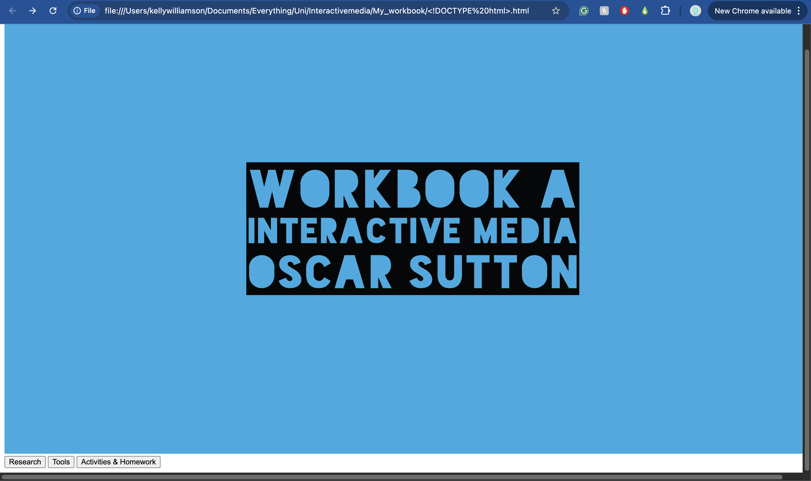
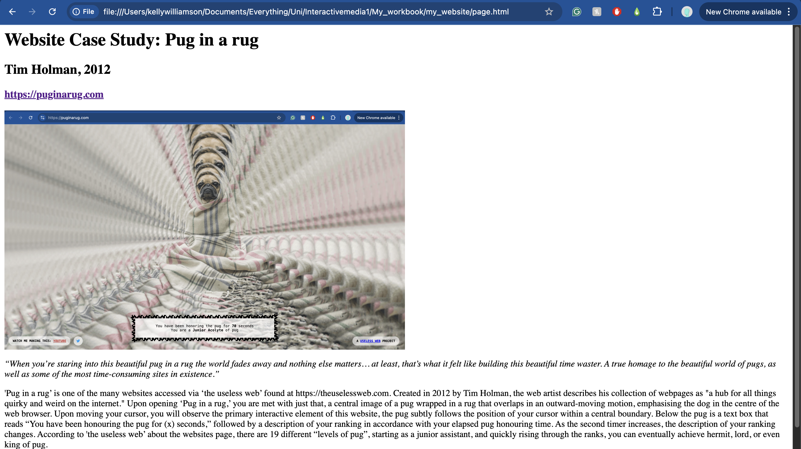
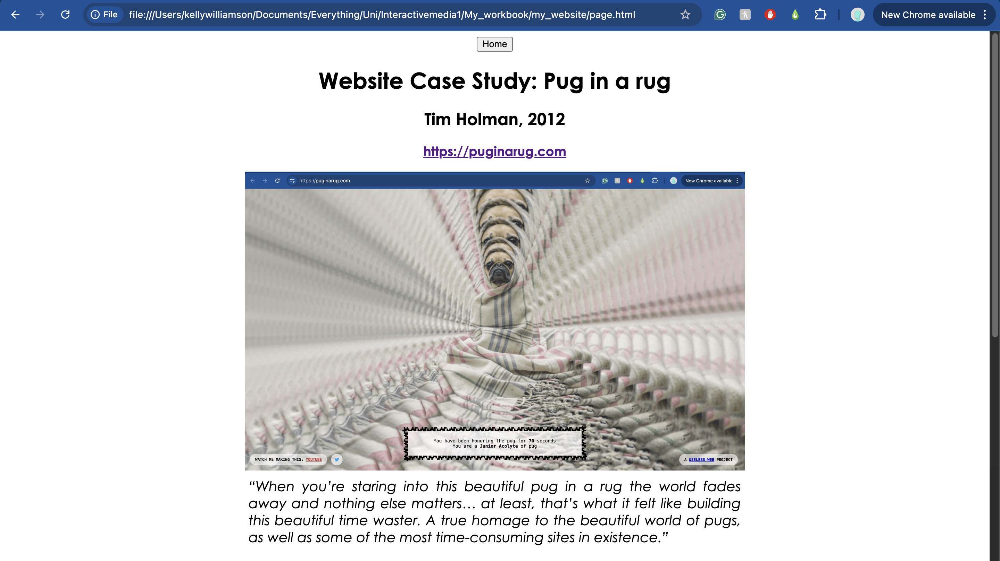
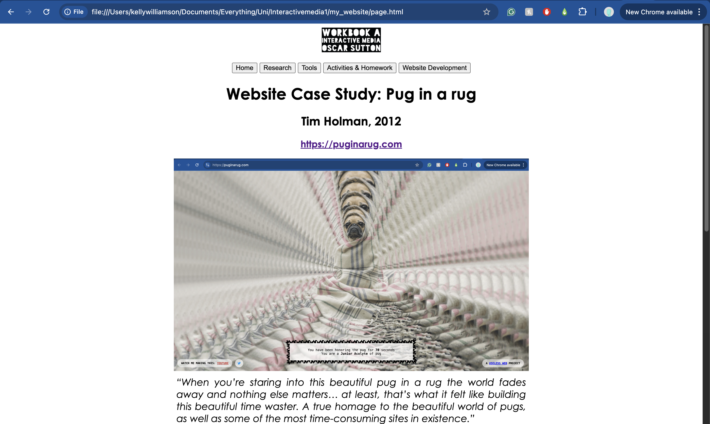
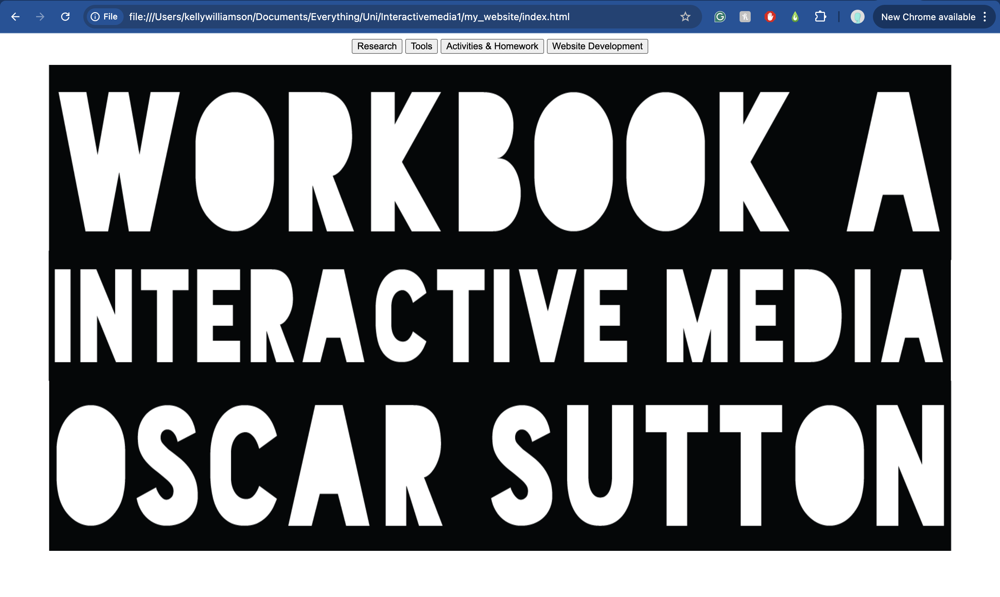

The following images and accompanying descriptions depict my website slowly taking shape as I learn new coding techniques in the effort of refining my website’s appearance and functionality. My process began with experimenting on the ‘Research page.’ Once I was happy with the look and feel of this first page, I planned to apply this code to the rest of my pages, and that is just what I did.

Before any website subpages were created, I had to make the homepage. At this stage, I was not aware of typefaces being changeable, so I decided to use an image I created in Adobe Illustrator. I like blue, but it didn’t stick. I was thrilled when I learnt how to create buttons; all that was next was to code the subpages that would be linked. I found linking images to my code quite confusing at first, but after watching a few YouTube videos, I resolved this issue.

This was a solid start. Although all the research information had been coded in, the formatting and website functionality weren’t there yet.

Formatting was not so difficult after all. From some research, I gathered a plethora of style commands that allowed me to change the typeface, type size, margins and text alignment. Century Gothic was my typeface of choice, as I enjoyed its legibility whilst not appearing too simple or expected, such as Arial or Helvetica. The formatting, in combination with the home page button, gave my website a much more professional feel.

Upon further refining, I decided to add a scaled-down version of the workbook logo I created at the top of the page. Adding all of the subpage buttons increased functionality, as now every page was accessible from the top.

For the home page, I decided to switch to black and white as I was unsure of how to continue this blue theme across the website consistently. When adjusting the width and height of the PNG, I accidentally made the title quite large. This proved to be a successful design choice as I enjoyed the large scale of the text, and it simultaneously developed hierarchy in comparison to the page buttons. I therefore decided to move the page buttons to the top of the screen, as this felt more aligned with the website design common practice.